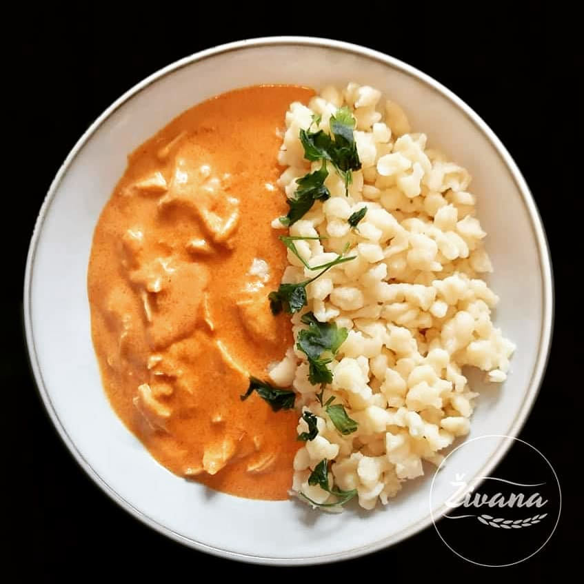

Kurací paprikáš podľa @zivana.obchod — Normy Jedál
Naskladnili sme čerstvé @davidkovo.koreni a nechýba ani °UDENÁ PAPRIKA° Dlho sme jej u nás doma odolávali, až sme ju vyskúšali do kuracieho paprikáša od @marekpavala 👨🍳 a vysledok 😋Výskúšajte, neoľutujete :)
°°°
#cerstvekorenie #davidkovokoreni #udenapaprika #kuracipaprikas #zivana @zivana.obchod #dubnicanadbahom